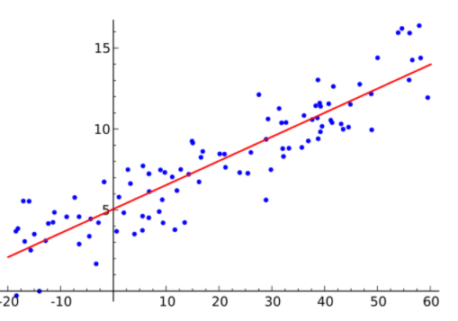
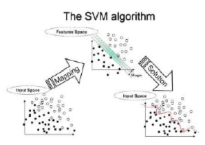

The family of Supervised Machine Learning algorithms, which includes regression methods, a subset of machine learning algorithms.
Machine learning algorithms that produce outputs based on the result data in a data set referred to as supervised learning. If our data collection has two classes of 0 and 1 outcomes.The data gathered provided to the computer as 0 or 1, we using supervised learning.
We can think of supervised learning as a student studying under the supervision of a supervisor. The most crucial step in supervised learning to properly and methodically preprocess the data before training the model.
• In supervised learning, input and output variables provided.
• SVM, Artificial Neural Networks, Regression, and Random Forest algorithms are used to train algorithms using labeled data.
• It is easier to use.
• It is more accurate and dependable.
• The number of classes is not known.
With the value it gets, regression estimation models give a continuous outcome. Quantities and dimensions are the most common continuous values. For example, regression forecasting models might predict that a property would sell for a certain dollar amount, such as $300,000 to $500,000.
Definition of Regression According to Oracle
A number prediction function based on data mining.
Regression models now used in a variety of fields, including financial forecasting, trend analysis, marketing, time series forecasting, and even medication response modeling.
Linear regression is a linear model in which the input variables (x) and the single output variable (y) are assumed to have a linear relationship (y). The simplest machine learning method to implement is simple linear regression. It does not have a complicated structure since there is just one variable, x. When there are additional variables, simple linear regression fails.

It’s one of the most extensively used regression approaches in the business, with applications in fraud detection, credit card scoring, and clinical trials. One of the most appealing features of this well-known method is that it can handle numerous dependent variables, both continuous and binary.
This supervised machine learning technique well-regulated and may be used to both classification and regression tasks.

When there are more than one predictor variable in a multivariate regression model, this approach applied, and the model termed multivariate multiple regression. This regression procedure used to predict the response variable given a collection of explanatory factors and has been dubbed one of the simplest supervised machine learning algorithms by academics. Matrix operations may be used to efficiently perform this regression approach, which can be done in Python using the numpy package, which offers definitions and operations for the matrix object.
You can find a lot of information on the subject here.
Click here for more information on this subject.